pacman::p_load(
rethinking,
tidyverse,
janitor,
knitr,
kableExtra
)3 Geocentric Models
Chapter 4 in McElreath (2020)
My notes for this chapter are a bit muddled, I did a mix of reading the textbook and watching the YouTube video. Unfortuantely the YouTube video doesn’t map onto the chapter very transparently and even has code that isn’t in the current textbook version, so some concepts might be repeated/out of order.
Resources
- YouTube lecture (2023): Geocentric Models
- Solomon Kurz: Linear models
Set-up
theme_set(theme_bw())Permission to be confused
From ~ 20 minute mark from the YouTue video
- you don’t need to understand everything all at once
- math, concepts, code, installation problems etc.
- it’s important to keep some flow
- keep moving forward despite the resistance of confusion/struggle
- things shouldn’t be too hard, because then you stop moving
- if it’s too easy, you don’t feel any resistance
- feeling confused means you’re paying attention :)
The Geocentric Model
planets have been observed to have a zig-zag orbit from the perspective of Earth
Geocentric model/Telomeric model
- used to predict the pattern of planets orbit, with the prior of Earth at the centre of the solar system
the geocentric model was very accurate
- however, the orbits of the planets are elliptical and orbit around the sun, not the earth
so models built on inaccurate assumptions can still be very accurate in their predictions
the orbits of the planets are embedded witin each other (based on their proximity to the sun), so there is a point when two planets’ orbits are closer to each other, i.e., when their orbits have them closer together
- which is how the perception of Mars’ zig-zag orbit (and other planets, but it’s more stricking for Mars)
in 1809: Bayesian argument for normal error and least-squares estimation from Gauss
Geocentric: describes association, makes predictions, but mechanisticalistically wrong
- the problem is not the model itself, rather some external causal model we project onto the model
- geocentric models are still extremely useful, what’s wrong is believing they’re true reflections of e.g., the solar system
- there’s also nothing wrong with linear regression itself, as long as we don’t believe they’re an accurate mechanistic model of the system we’re studying
Gaussian: abstracts from generative error model, replaces with normal distribution, mechanistically silent
- usually a pretty good approximation of associations
- we will be using gaussian error models
useful when handled with care
- many special cases: ANOVA, ANCOVA, t-test, etc.
3.1 Why normal distributions are normal
3.1.1 Normal by multiplication
3.1.2 Normal by log-multiplication
3.1.3 Using Gaussian distributions
3.2 A language for describing models
3.3 A Gaussian model of height
# load Howell1 data from rethinking package
data(Howell1)
df_weight <- Howell1head(df_weight) height weight age male
1 151.765 47.82561 63 1
2 139.700 36.48581 63 0
3 136.525 31.86484 65 0
4 156.845 53.04191 41 1
5 145.415 41.27687 51 0
6 163.830 62.99259 35 1summary(df_weight) height weight age male
Min. : 53.98 Min. : 4.252 Min. : 0.00 Min. :0.0000
1st Qu.:125.09 1st Qu.:22.008 1st Qu.:12.00 1st Qu.:0.0000
Median :148.59 Median :40.058 Median :27.00 Median :0.0000
Mean :138.26 Mean :35.611 Mean :29.34 Mean :0.4724
3rd Qu.:157.48 3rd Qu.:47.209 3rd Qu.:43.00 3rd Qu.:1.0000
Max. :179.07 Max. :62.993 Max. :88.00 Max. :1.0000 - age ranges from babies to seniors
- sex as binary
- height in cm
- weight in kg
precis() function from rethinking package:
precis(df_weight) |>
as_tibble() |>
kable(digits = 1) |>
kable_styling()
|
|
|
|
|
To define heights as normally distributed, we write \(\ref{eq-height-gauss}\), where \(i\) stands for index. \(\ref{eq-height-gauss}\) is saying that all the golem (i.e., our model) knows about each observed height measurement is defined by the same normal distribution with mean \(\mu\) and standard deviation \(\sigma\).
\[\begin{align} h_i \sim Normal(\mu, \sigma) \label{eq-height-gauss} \\ \mu \sim Normal(178, 20) \label{eq-height-prior-mu} \\ \sigma \sim Uniform(0, 50) \label{eq-height-prior-sigma} \end{align}\]
\(\ref{eq-height-prior-mu}\) represents our prior for \(\mu\), where our assumed mean is 178 cm (because Richard McElreath is 178cm tall), with a 95% probability between +/- 40cm (because if the SD is 20cm, 20 x 1.96 is approximately 20 x 2).
# R chunk 4.10
# subset data for adults only
d2 <- df_weight |> filter(age > 18)We can plot our priors:
# R code chunk 4.12
curve(dnorm(x, 178, 20), from = 100, to = 250)
Or, with ggplot (from Solomon Kurz):
ggplot(data = tibble(x = seq(from = 100, to = 250, by = .1)),
aes(x = x, y = dnorm(x, mean = 178, sd = 20))) +
geom_line() +
ylab("density")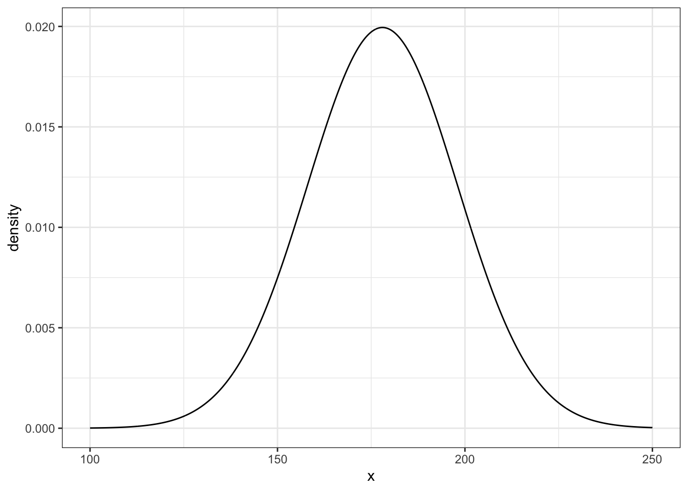
We can also view our prior for \(\sigma\), which is a flat (uniform) prior:
# R code chunk 4.13
curve(dunif(x, 0, 50), from = 10, to = 60)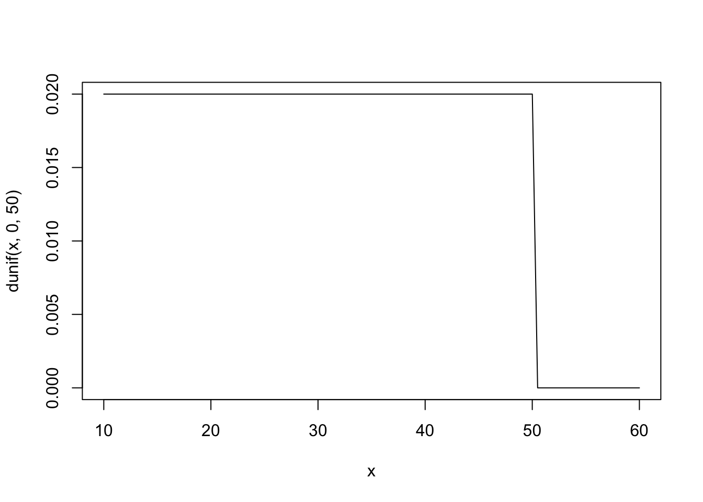
And with ggplot (from Solomon Kurz):
tibble(x = seq(from = -10, to = 60, by = .1)) %>%
ggplot(aes(x = x, y = dunif(x, min = 0, max = 50))) +
geom_line() +
scale_y_continuous(NULL, breaks = NULL) +
theme(panel.grid = element_blank())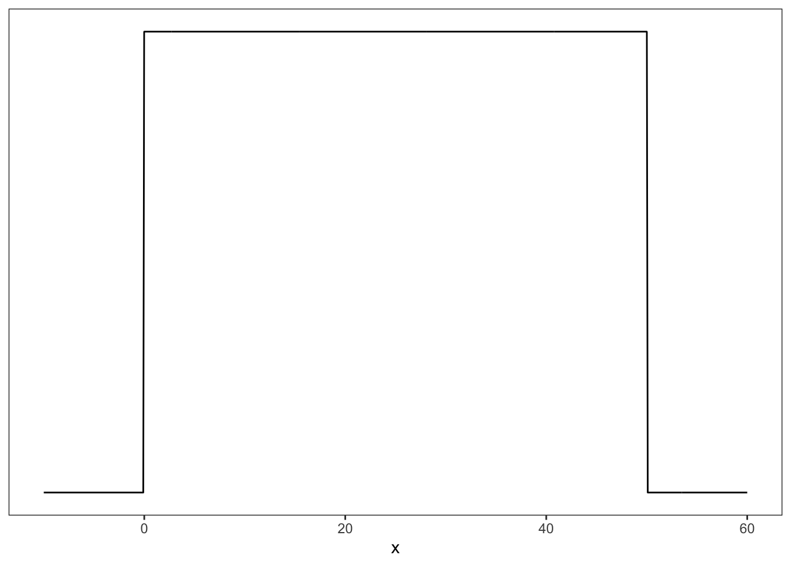
A standard deviation must be positiion, and so we’ve bound it at zero. Picking the upperbound is another question: in our case a sd of 50cm would imply that 95% of individual heights lie within 100cm of the average height (again, because SD * 1.96), which is a very large range.
Now it’s time for a ~prior predictive~ simulation, for which we need our chosen priors for \(h, \mu,\) and \(\sigma\), which imply a joint prior distribution of individual heights.
Let’s quickly simiulate heights by sampling from our prior. We can process priors just like posteriors, because every posterior is also potentially a prior for a subsequent analysis.
# R code 4.14
sample_mu <- rnorm(1e4, 178, 20)
sample_sigma <- runif(1e4, 0, 50)
prior_h <- rnorm(1e4, sample_mu, sample_sigma)
dens(prior_h)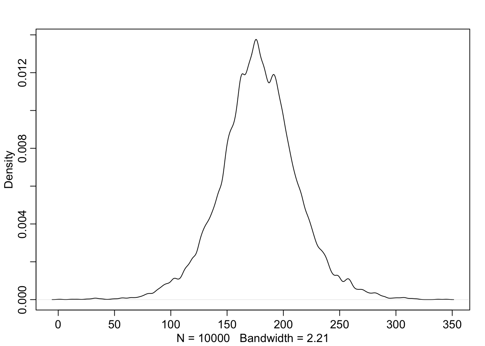
And sampling from both \(\mu\) and \(\sigma\) priors to get a prior probability of heights:
n <- 1e4
set.seed(4)
tibble(sample_mu = rnorm(n, mean = 178, sd = 20),
sample_sigma = runif(n, min = 0, max = 50)) %>%
mutate(x = rnorm(n, mean = sample_mu, sd = sample_sigma)) %>%
ggplot(aes(x = x)) +
geom_density(fill = "red", linewidth = 0, alpha = .25) +
scale_y_continuous(NULL, breaks = NULL) +
labs(subtitle = expression(Prior~predictive~distribution~"for"~italic(h[i])),
x = NULL) +
theme(panel.grid = element_blank())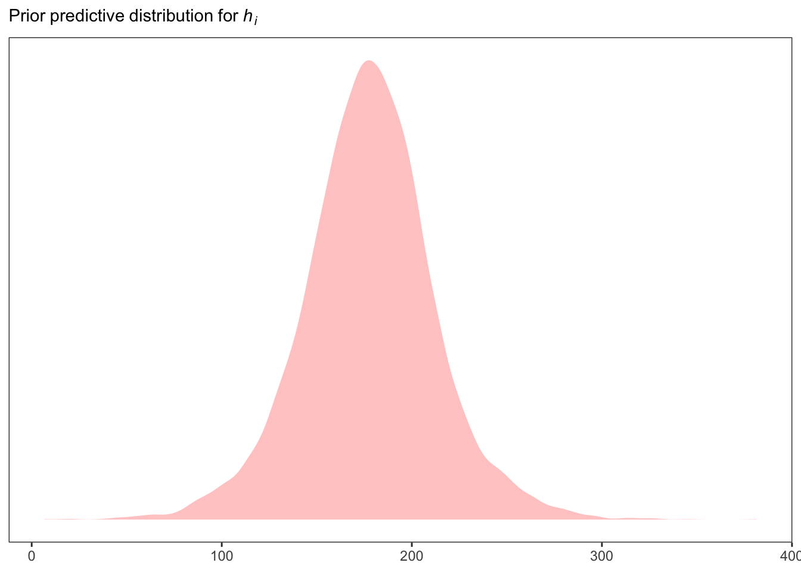
3.3.1 Finding the posterior distribution with quap
# R chunk 2.23
d3 <- sample( d2$height , size=20 )# R chunk 4.24
mu.list <- seq( from=150, to=170 , length.out=200 )
sigma.list <- seq( from=4 , to=20 , length.out=200 )
post2 <- expand.grid( mu=mu.list , sigma=sigma.list )
post2$LL <- sapply( 1:nrow(post2) , function(i) sum( dnorm( d3 , mean=post2$mu[i] , sd=post2$sigma[i] , log=TRUE ) ) )
post2$prod <- post2$LL + dnorm( post2$mu , 178 , 20 , TRUE ) + dunif( post2$sigma , 0 , 50 , TRUE )
post2$prob <- exp( post2$prod - max(post2$prod) )
sample2.rows <- sample( 1:nrow(post2) , size=1e4 , replace=TRUE , prob=post2$prob )
sample2.mu <- post2$mu[ sample2.rows ]
sample2.sigma <- post2$sigma[ sample2.rows ]
plot( sample2.mu , sample2.sigma , cex=0.5 , col=col.alpha(rangi2,0.1) , xlab="mu" , ylab="sigma" , pch=16 )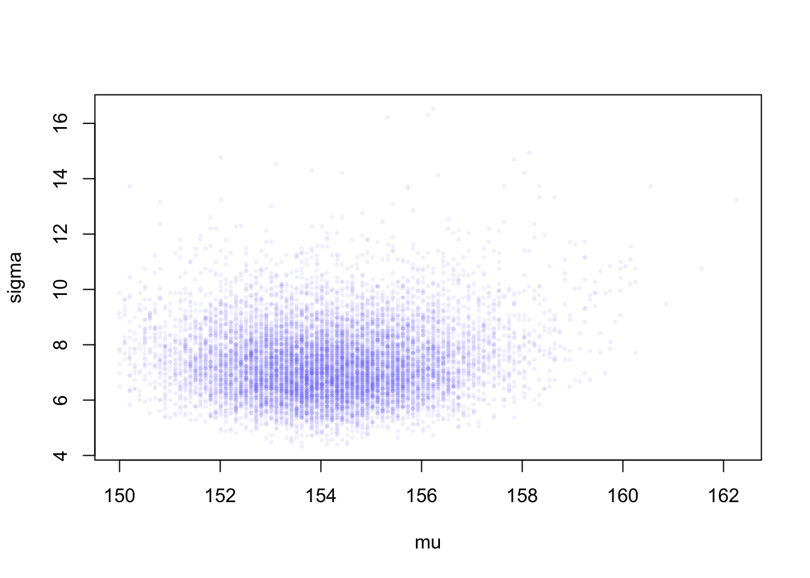
# R code 4.26
data(Howell1)
d <- Howell1
d2 <- d[d$age >= 18 , ]And define our model and place it into an alist.
# R code 4.27
flist <-
alist(height ~ dnorm(mu , sigma) ,
mu ~ dnorm(178 , 20) ,
sigma ~ dunif(0 , 50)
)Fit a model to the data in d2.
# R code 4.28
m4.1 <- quap(flist, data = d2)Take a look.
# R code 4.29
precis(m4.1) mean sd 5.5% 94.5%
mu 154.606899 0.4119494 153.948524 155.265273
sigma 7.730482 0.2913059 7.264919 8.1960453.3.2 Simulate weights
From the GitHub script 03_howell etc.
data(Howell1)
d <- Howell1
# draw data
blank(bty="n")
col2 <- col.alpha(2,0.8)
plot( d$height , d$weight , col=col2 , lwd=3 , cex=1.2 , xlab="height (cm)" , ylab="weight (kg)" )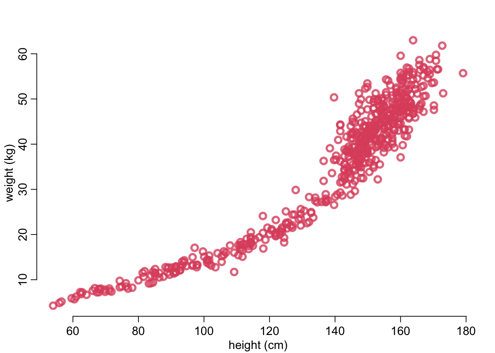
d <- d[ d$age>=18 , ]
plot( d$height , d$weight , col=col2 , lwd=3 , cex=1.2 , xlab="height (cm)" , ylab="weight (kg)" )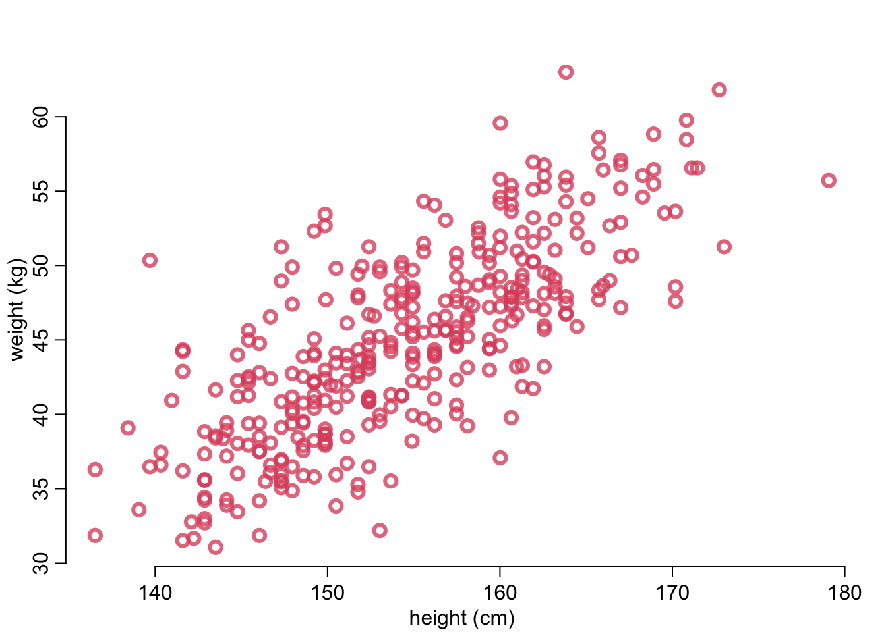
3.3.3 Describing models
(video c. 31:00)
Conventional statistical model notaton:
- list the variables in the model
- define each variable as a deterministic or distributional function of the other variables
- where does each variable get its value?
# function to simulate weights of individuals from height
sim_weight <- function(H,b,sd) {
U <- rnorm(length(H), 0, sd)
W <- b*H + U
return(W)
}this is a function of unobserved U, which has normal error
where W is a deterministic function of H and U together
this can be re-written with standard statistical notation as followed:
\[\begin{align} W_i &= \beta H_i + U_i \label{eq-W} \\ U_i &\sim Normal(0,\sigma) \label{eq-U} \\ H_i &\sim Uniform(130,170) \label{eq-H} \end{align}\]
Each of these is mirrored in a line of code. Along the left of the equations are the variables, along the right are their definitions. The subscripts indicate individuals (indexing).
- \(=\) indicates a deterministic relationship
- \(\sim\) indicates a distributional relationship
Equation \(\ref{eq-W}\) is the equation for expected weight. Once we know the values to the right of this equation we can assign values to W. Equation \(\ref{eq-U}\) represents Gaussian error with standard deviation sigma. Equation \(\ref{eq-H}\) defines height as uniformly distributed from 130cm to 170cm. These are all defined in the code chunk above, but written in the opposite order. In the code it’s written in order of execution, but the statistical conventional notation sometimes has arbitrary order, but conventionally is stated in the opposite direction as the code is written because you start with the most general definition (\(\ref{eq-W}\)) which depends on the other variables, and then you see how the variables W depends upon are defined. There’s a hierarchy that makes sense.
3.3.4 Estimator
We want to estimate how the average weight changes with height, i.e., how the average weight changes with height.
\[\begin{equation} E(W_i|H_i) = \alpha + \beta H_i \end{equation}\]
Where \(E(W_i|H_i)\) is the average weight conditional on height, \(\alpha\) is the intercept and \(\beta\) is our slope. So each height has a different average weight.
3.3.5 Posterior distribution
Good Bayesians estimate a posterior. The equation below is the same as that for when we tossed the globe, but we just have more unknowns now.
\[\begin{equation} Pr(\alpha, \beta, \sigma|H_i, W_i) = \frac {Pr(W_i|H_i, \alpha, \beta, \sigma)Pr(\alpha, \beta, \sigma)} {Z} \end{equation}\]
- \(Pr(\alpha, \beta, \sigma|H_i, W_i)\) is the posterior probability of a specific regression line, which is defined by , , and (unobserved variables). H and W are our observed data, we don’t need a posterior distribution for them, they’re observed (the likelihood).
- \(Pr(W_i|H_i, \alpha, \beta, \sigma)\): garden of forking data
- \(Pr(\alpha, \beta, \sigma)\): our priors
- \(Z\): a normalising constant that we don’t need to pay too much attention to, it ensures the lefthand side of the equation is a proper probability
W is normally distributed with mean that is a a linear function of H.
These models are typically written as below:
\[\begin{align} W_i &= Normal(\mu_i, \sigma) \\ \mu_i &\sim \alpha + \beta H_i \end{align}\]
3.3.6 Grid approximat posterior
All posterior distributions begin with a single observations. There’s no minimum number of observations in Bayesian inference.
3.3.7 Quardratic approximation
- we’ll approximate the posterior distribution as a multivariate Gaussian distribution. We can do that because posterior distributions are typically multivariate Gaussian distributions if there are enough observations. A tool that does this for us is called
quap()in thestatrethinkingpackage.
The Gaussian distribution is quadratic, and in the log-space the Gaussian distribution is a perfect parabola (i.e., quadratic).
When there are no observations, what does the model believe? These are our priors with no likelihood.
# this wasn't working...
m3.1 <-
quap(
alist(
W ~ dnorm(mu, sigma),
mu <- a + b*Hm,
a ~ dnorm(0,10),
b ~ dunif(0,1),
sigma ~ dunif(0, 10)
),
data - list(W=W, H=H)
)3.4 Linear Prediction: Adding a predictor
We’ll now add a predictor to our model: weight. So we’ll look at how height covaries with weight (our predictor).
A scatter plot of weight by height (with ggplot):
ggplot(data = d2,
aes(x = weight, y = height)) +
geom_point(shape = 1, size = 2) +
theme_bw() +
theme(panel.grid = element_blank())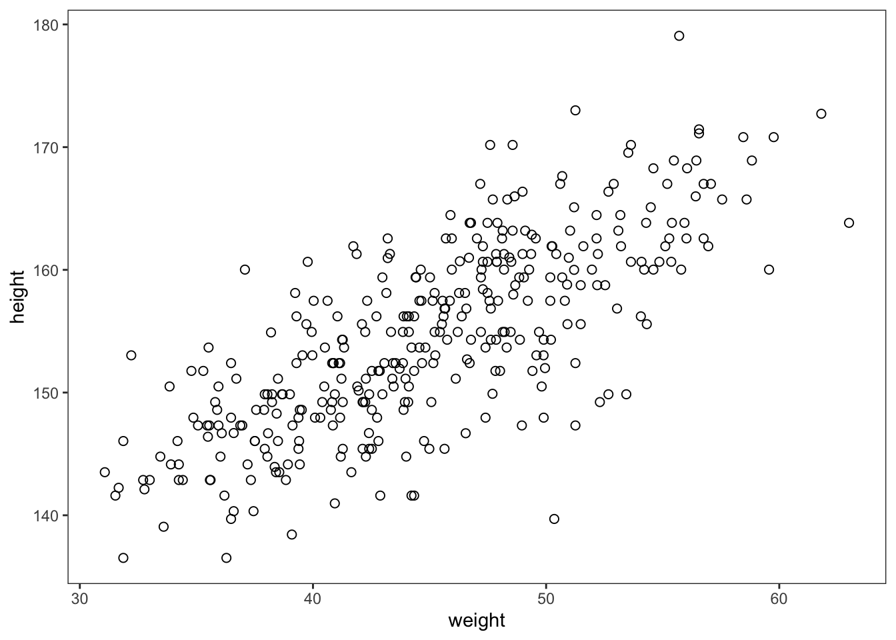
We now have:
\[\begin{align} h_i &\sim Normal(\mu_i, \sigma) \hspace{35pt}likelihood \label{eq-likelihood} \\ \mu_i &\sim \alpha + \beta(x_i - \bar{x}) \hspace{35pt}linear\;model \label{eq-linear} \\ \alpha &\sim Normal(178, 20) \hspace{35pt}\beta \; prior \label{eq-alpha}\\ \beta &\sim Normal(178, 20) \hspace{35pt}\mu \; prior \label{eq-mu}\\ \sigma &\sim Uniform(0, 50) \hspace{35pt}\sigma \; prior \label{eq-sigma} \end{align}\]
where the average of \(x\) values is \(\bar{x}\). Our predictor variablle is \(x\), which is a list of measures of the same length as \(h\). We now define \(\mu\) as a function of the values in \(x\) in order to include our predictor, weight, in the model. \(\alpha\) is our intercept, \(\beta\) is our slope.
3.5 Polynomial regression
3.6 Solomon Kurz
library(brms)Loading required package: RcppLoading 'brms' package (version 2.20.3). Useful instructions
can be found by typing help('brms'). A more detailed introduction
to the package is available through vignette('brms_overview').
Attaching package: 'brms'The following objects are masked from 'package:rethinking':
LOO, stancode, WAICThe following object is masked from 'package:stats':
ar3.6.1 Fitting a model with brm()
Instead of statrethinking::map()
d2 <-
d %>%
filter(age >= 18)b4.1 <-
brm(data = d2,
family = gaussian,
height ~ 1,
prior = c(prior(normal(178, 20), class = Intercept),
prior(uniform(0, 50), class = sigma, ub = 50)),
iter = 2000, warmup = 1000, chains = 4, cores = 4,
seed = 4,
file = here::here("fits/b04.01"))plot(b4.1) 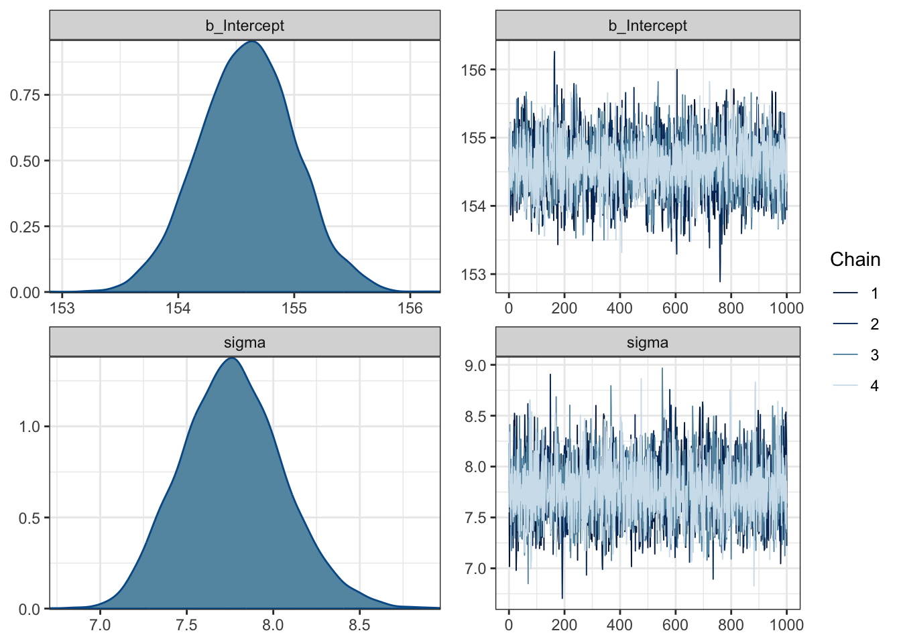
print(b4.1) Family: gaussian
Links: mu = identity; sigma = identity
Formula: height ~ 1
Data: d2 (Number of observations: 352)
Draws: 4 chains, each with iter = 2000; warmup = 1000; thin = 1;
total post-warmup draws = 4000
Population-Level Effects:
Estimate Est.Error l-95% CI u-95% CI Rhat Bulk_ESS Tail_ESS
Intercept 154.60 0.41 153.80 155.43 1.00 2887 2156
Family Specific Parameters:
Estimate Est.Error l-95% CI u-95% CI Rhat Bulk_ESS Tail_ESS
sigma 7.77 0.30 7.22 8.38 1.00 3322 2196
Draws were sampled using sampling(NUTS). For each parameter, Bulk_ESS
and Tail_ESS are effective sample size measures, and Rhat is the potential
scale reduction factor on split chains (at convergence, Rhat = 1).Or, if we want to use the 89% intervals used in the textbook:
summary(b4.1, prob = .89) Family: gaussian
Links: mu = identity; sigma = identity
Formula: height ~ 1
Data: d2 (Number of observations: 352)
Draws: 4 chains, each with iter = 2000; warmup = 1000; thin = 1;
total post-warmup draws = 4000
Population-Level Effects:
Estimate Est.Error l-89% CI u-89% CI Rhat Bulk_ESS Tail_ESS
Intercept 154.60 0.41 153.95 155.24 1.00 2887 2156
Family Specific Parameters:
Estimate Est.Error l-89% CI u-89% CI Rhat Bulk_ESS Tail_ESS
sigma 7.77 0.30 7.31 8.26 1.00 3322 2196
Draws were sampled using sampling(NUTS). For each parameter, Bulk_ESS
and Tail_ESS are effective sample size measures, and Rhat is the potential
scale reduction factor on split chains (at convergence, Rhat = 1).Now if we want very narrow priors (sd of 0.1!):
b4.2 <-
brm(data = d2, family = gaussian,
height ~ 1,
prior = c(prior(normal(178, 0.1), class = Intercept),
prior(uniform(0, 50), class = sigma, ub = 50)),
iter = 2000, warmup = 1000, chains = 4, cores = 4,
seed = 4,
file = here::here("fits/b04.02"))plot(b4.2)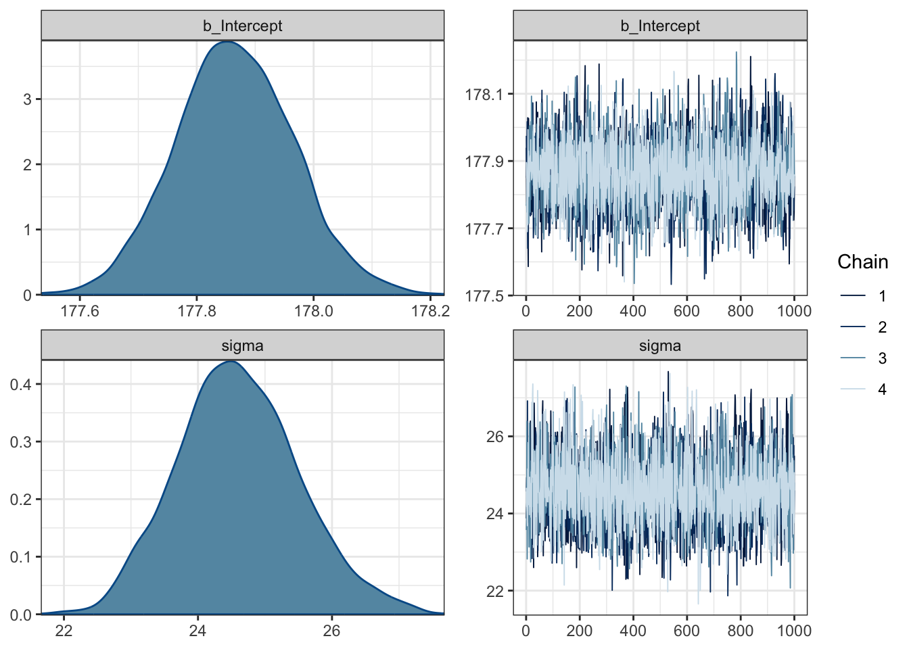
We see the chains actually look pretty good. Let’s look at the fixed effects to easily compare the estimates of the two models:
rbind(
summary(b4.1)$fixed |>
as_tibble() |>
mutate(model = "b4.1"),
summary(b4.2)$fixed |>
as_tibble() |>
mutate(model = "b4.2")
)# A tibble: 2 × 8
Estimate Est.Error `l-95% CI` `u-95% CI` Rhat Bulk_ESS Tail_ESS model
<dbl> <dbl> <dbl> <dbl> <dbl> <dbl> <dbl> <chr>
1 155. 0.411 154. 155. 1.00 2887. 2156. b4.1
2 178. 0.101 178. 178. 1.00 3066. 2437. b4.2 3.6.2 Sampleing from a brm() fit
Instead of using the vcov() function from the statrethinking package (brms has a vcov() function but it only gives the first element in the matrix), we can get it after putting the HMC chains in a data frame (which we do with as_draws_df()):
post <- as_draws_df(b4.1)
head(post)# A draws_df: 6 iterations, 1 chains, and 4 variables
b_Intercept sigma lprior lp__
1 155 7.5 -8.5 -1227
2 155 7.0 -8.5 -1230
3 154 7.6 -8.5 -1226
4 154 8.0 -8.5 -1226
5 155 7.6 -8.5 -1226
6 155 7.4 -8.5 -1227
# ... hidden reserved variables {'.chain', '.iteration', '.draw'}select(post, b_Intercept:sigma) %>%
cov()Warning: Dropping 'draws_df' class as required metadata was removed. b_Intercept sigma
b_Intercept 0.168810743 -0.000740092
sigma -0.000740092 0.0874164263.7 Practice
E1
In the model definition below, which line is the likelihood? \[\begin{align} y_i &\sim Normal(\mu,\sigma) \label{ex-e1a} \\ \mu &\sim Normal(0,10) \label{ex-e1b} \\ \sigma &\sim Exponential(1) \label{ex-e1c} \end{align}\]
\(\ref{ex-e1a}\) is the likelihood (\(\ref{ex-e1b}\) is the prior for \(\mu\) and \(\ref{ex-e1c}\) for \(\sigma\))
E2
In the model definition just above, how many parameters are in the posterior distribution?
There are two parameters in the posterior distribution: \(\mu\) and \(\sigma\)
E3
Using the model definition above, write down the appropriate form of Bayes’ theorem that includes the proper likelihood and priors.
Bayes’ theorem is:
\[\begin{equation} P(A|B) = \frac{P(B|A)P(A)}{P(B)} \end{equation}\]
Where \(A\) is our priors and \(B\) is the posterior, i.e., observed data (\(y\)) I’m guessing? And so…
\[\begin{equation} P(\mu,\sigma|y) = \frac{P(y|\mu,\sigma)P(\mu)P(\sigma)}{P(y)} \end{equation}\]
Okay I really don’t know…I guess we add in the model parameter definitions?
E4
In the model definition below, which line is the linear model? \[\begin{align} y_i &\sim Normal(\mu,\sigma) \label{ex-e4a} \\ \mu &= \alpha + \beta x_i \label{ex-e4b} \\ \alpha &\sim Normal(0,10) \label{ex-e4c} \\ \beta &\sim Normal(0,1) \label{ex-e4d} \\ \sigma &\sim Exponential(2) \label{ex-e4e} \end{align}\]
\(\ref{ex-e4b}\) is the linear model. is the likelihood, the prior for \(\alpha\) (intercept), the prior for \(\beta\) (slope), and the prior for sigma (sd).
E5
In the model definition just above, how many parameters are in the posterior distribution?
The posterior distribution has the parameters:
- \(\sigma\): standard deviation
- \(\alpha\): intercept
- \(\beta\): slope
M1
For the model definition below, simulate observed y values from the prior (not the posterior). \[\begin{align} y_i &\sim Normal(\mu,\sigma) \label{ex-m1a} \\ \mu &\sim Normal(0,10) \label{ex-m1b} \\ \sigma &\sim Exponential(1) \label{ex-m1c} \end{align}\]
# same as R chunk 4.14
sample_mu <- rnorm(1e4, 0, 10)
sample_sigma <- rexp(1e4, 1)
# simulate prior predictive values
prior_h <- rnorm(1e4, sample_mu, sample_sigma)
dens(prior_h)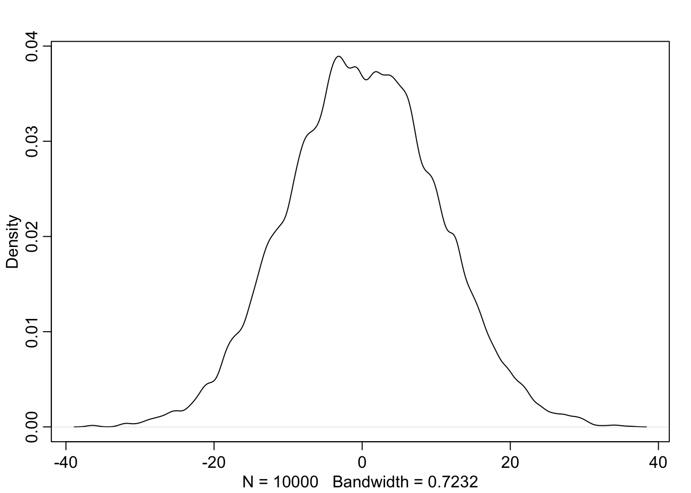
And our prior predictive with ggplot:
n <- 1e4
set.seed(4)
tibble(sample_mu = rnorm(n, mean = 0, sd = 10),
sample_sigma = rexp(n, 1)) %>%
mutate(x = rnorm(n, mean = sample_mu, sd = sample_sigma)) %>%
ggplot(aes(x = x)) +
geom_density(fill = "red", linewidth = 0, alpha = .25) +
scale_y_continuous(NULL, breaks = NULL) +
labs(subtitle = expression(Prior~predictive~distribution~"for"~italic(h[i])),
x = NULL) +
theme(panel.grid = element_blank())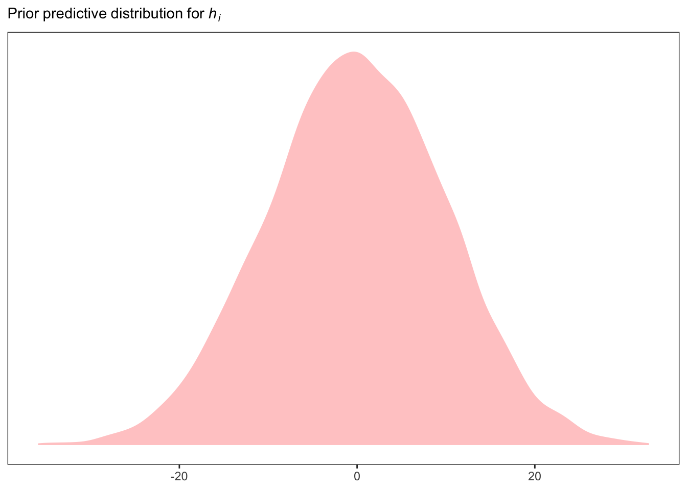
3.7.1 Sampling from the posterior
# R chunk 4.15
sample_mu <- rnorm( 1e4 , 178 , 100 )
prior_h <- rnorm( 1e4 , sample_mu , sample_sigma )
dens( prior_h )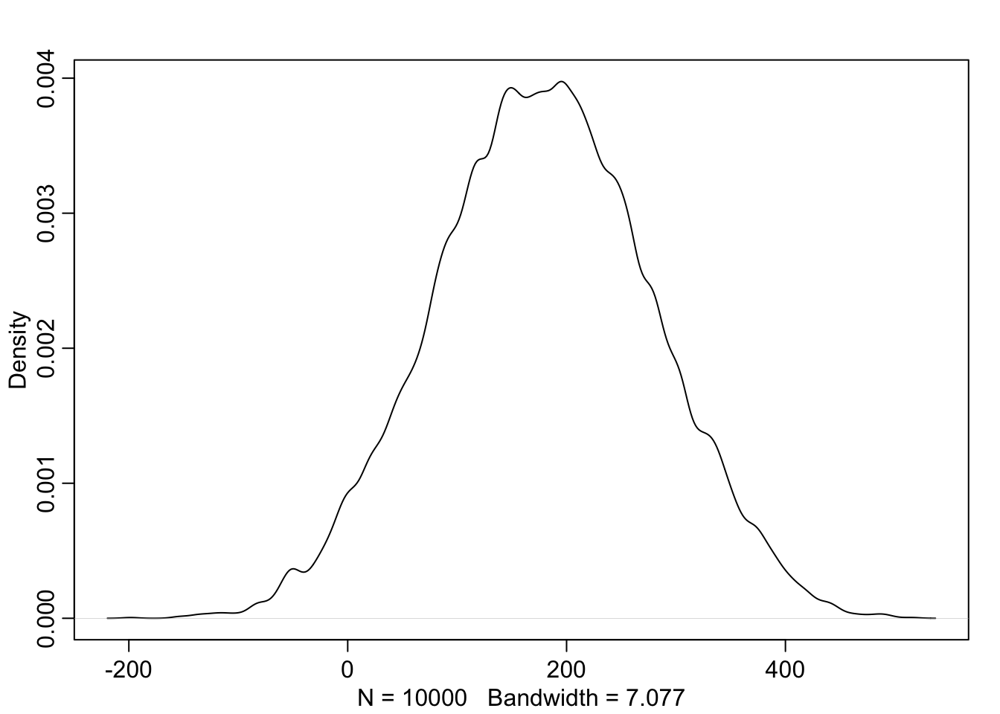
# R chunk 4.16
mu.list <- seq( from=150, to=160 , length.out=100 )
sigma.list <- seq( from=7 , to=9 , length.out=100 )
post <- expand.grid( mu=mu.list , sigma=sigma.list )
post$LL <- sapply( 1:nrow(post) , function(i)
sum( dnorm( d2$height , post$mu[i] , post$sigma[i] , log=TRUE ) ) )
post$prod <- post$LL + dnorm( post$mu , 178 , 20 , TRUE ) + dunif( post$sigma , 0 , 50 , TRUE )
post$prob <- exp( post$prod - max(post$prod) )# R chunk 4.17
sample.rows <- sample( 1:nrow(post) , size=1e4 , replace=TRUE , prob=post$prob )
sample.mu <- post$mu[ sample.rows ]
sample.sigma <- post$sigma[ sample.rows ]# R chunk 4.21
dens(sample_mu)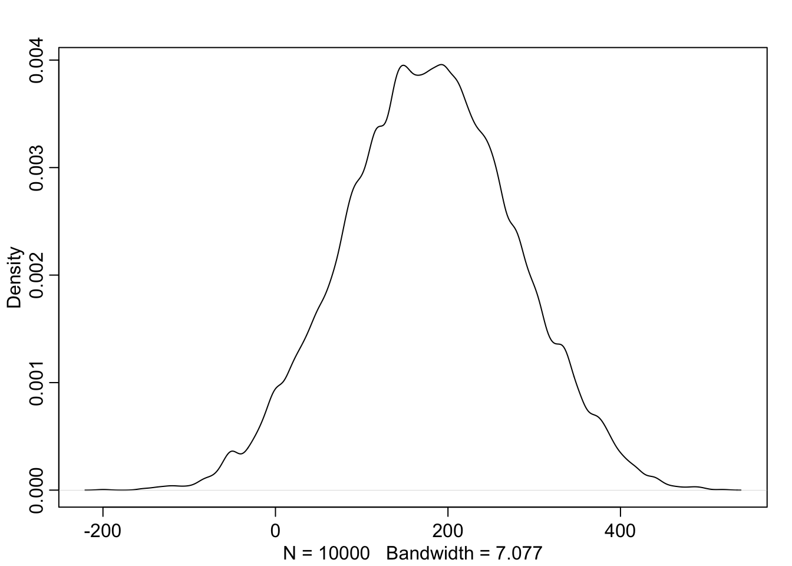
# R chunk 4.21
dens(sample_sigma)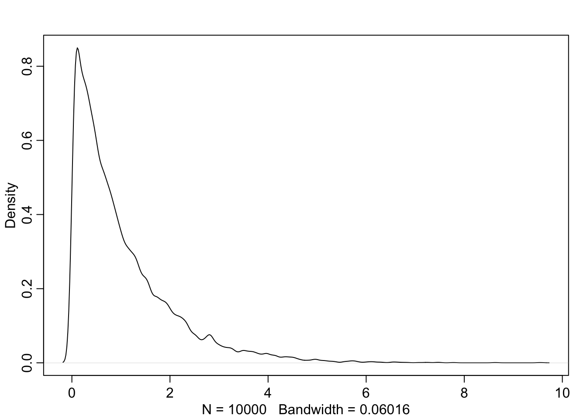
M2
Translate the model just above into a quap formula.
Do this as in R chunk 4.26:
flist <-
alist(height ~ dnorm(mu , sigma) ,
mu ~ dnorm(0 , 10) ,
sigma ~ dexp(0 , 1)
)